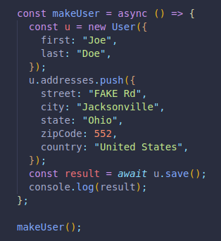

Relationships between data are the different entities we store in a database that are connected in one way or another.
A website for social media may have a user's friends in one entity, its profile pictures and posts in another, and comments and likes in yet another one.
Although they are separate entities, they are all in the same database, interconnected in ways to always have the data available.
In SQL, the data is stored in isolated tables, where strict schemas are needed. Each table can be connected and accesses by another one by inking them.
A single or multiple aspect of each table can be referenced in order to avoid duplication.
There are many ways to do this:
Since MongoDB does not follow the same pattern/infrastructure as SQL database, we do this linking/referencing in alternate ways.
There are many structuring options for our data.
Depending on how much data we're working with, it may be wise to choose different approaches for information storing.
A user with a few addresses, like in Amazon, Uber Eats. It's cery unlikely to have thousands of addresses. There's no need to separate them to their own collection or model.
We should consider if we need to access an address without the user, if we would ever need to access all of them at the same time, etc.
Here is an example:
We create a schema, with one of the keys having an array of keys and values as its value.
BY default, this embedded array will generate its own _id, which we can prevent as seen in the code.
Here we use our schema to create a new user.
And here we make a function to add a new address to the array designated for addresses.

This is our approach for a medium amount of data.
We will use an object id in the parent object as a reference to the other objects in order to reference them. It can be another key instead too.